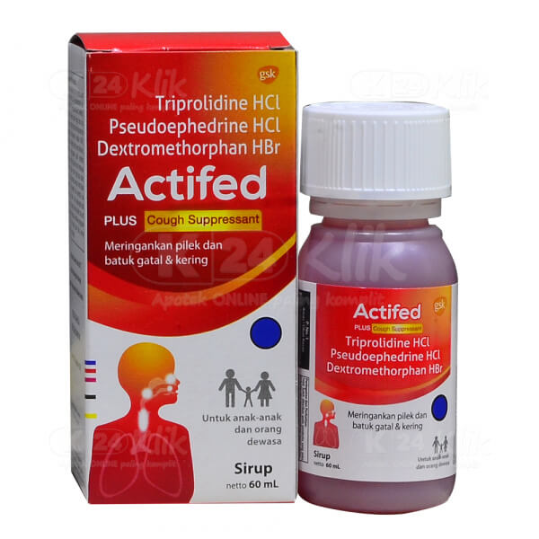

Batuk Kering
Batuk kering adalah batuk yang tidak disertai dahak.
- Gejala : Batuk yang dapat dirasakan seperti gatal di tenggorokan
- Penyebab : Meskipun paling sering disebabkan oleh infeksi saluran pernapasan, batuk kering juga bisa menjadi gejala penyakit asam lambung hingga kanker paru-paru.
-
Pengobatan Konvensional
Actifed
- Tiap 5 ml sirup mengandung: Dextromethorphan HBr 10 mg, Pseudoephedrine HCl 30 mg, Triprolidine HCl 1.25 mg
- Dosis Dewasa : Dewasa dan anak-anak di atas 12 tahun: 1 sendok takar (5 ml), 3 kali sehari
- Dosis Anak Anak : Anak-anak usia 6-12 tahun: 1/2 sendok takar (2,5 ml), 3 kali sehari Tidak dianjurkan untuk anak di bawah 6 tahun
- Indikasi : Paracetamol diketahui dapat bekerja pada pusat pengaturan suhu yang ada di otak untuk menurunkan suhu tubuh saat seseorang sedang mengalami demam. Selain itu, paracetamol juga bisa menghambat pembentukan prostaglandin, yaitu senyawa yang memicu nyeri dan bengkak ketika terjadi kerusakan atau cedera pada jaringan tubuh.
- Kontra indikasi : Sensitif terhadap obat simpatomimetik lain (seperti efedrin, fenilpropanolamin), hipertensi berat. Sedang mendapat terapi MAOI dalam-dalam minggu terakhir. Tidak dianjurkan untuk anak di bawah 6 tahun.
- ESO : Mengantuk, gangguan pencernaan, sakit kepala, gangguan psikomotorik, takikardi, aritmia, mulut kering, palpitasi, kesulitan berkemih.
-
Pengobatan Herbal

Menthol
- Melansir Healthline, obat batuk tradisional berbasis menthol dapat mendinginkan tenggorokan yang meradang, menenangkan tenggorokan yang teriritasi, dan meluruskan refleks batuk.
Madu
- Orang dewasa dan anak di atas satu tahun dapat minum madu sebagai obat batuk kering alami. Kandungan zat antibakteri dan anti peradangan dalam bahan alami ini bisa menenangkan tenggorokan yang sedang iritasi.
Jahe
- Selain kunyit, jahe juga mengandung zat antibakteri dan anti peradangan alami. Cukup sudah beberapa ruas jahe ke dalam air hangat. Tambahkan madu agar wedang jahe lebih nikmat dan ampuh untuk obat batuk kering.